Her sabah sevgiyle kaynayan kazanlardan tabağınıza süzülen tüm lezzetlerimiz.
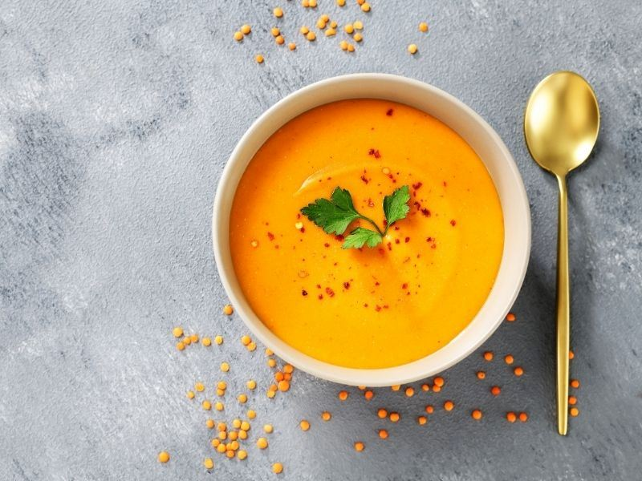
ÇorbaKıtır ekmek ve tereyağlı sos eşliğinde, lokanta usulü tam kıvamında süzme mercimek çorbası.
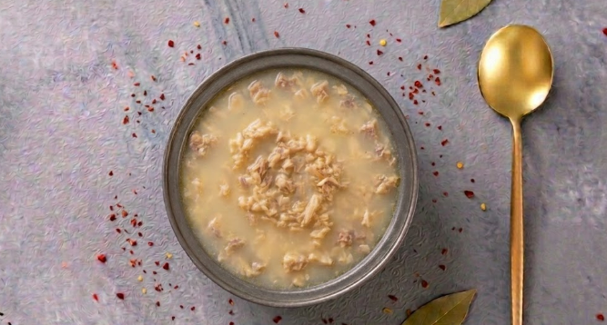
ÇorbaSarımsak ve sirkenin muhteşem uyumuyla, geceyi şifalandıran terbiyeli, dumanı üstünde işkembe.
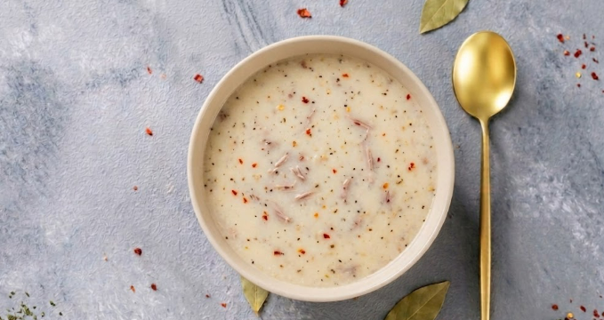
ÇorbaÖzel baharatlarla harmanlanmış, ağır ateşte lokum gibi pişmiş et parçalarıyla zenginleşen efsane lezzet.
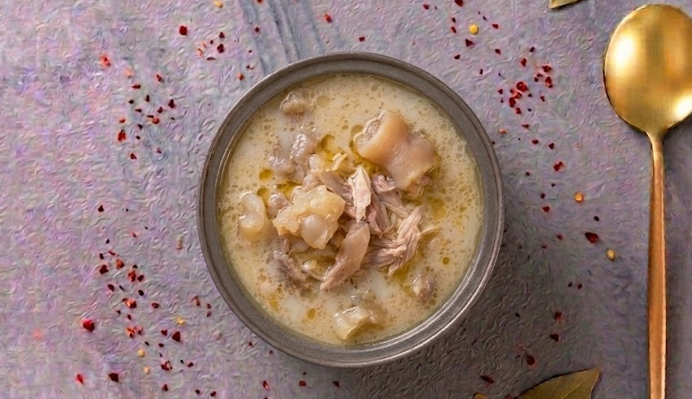
Çorbaİlikli kemik suyuyla saatlerce kaynatılmış, kolajen deposu, yoğun ve doyurucu şifa kaynağı.
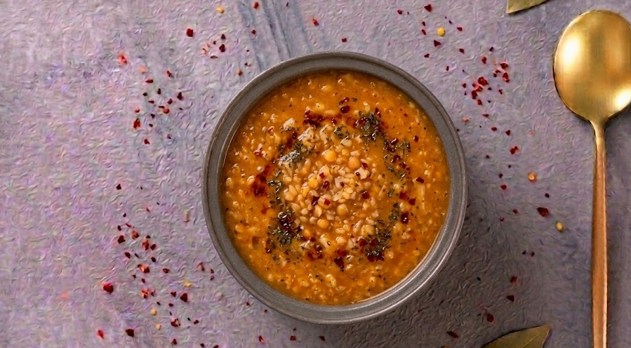
ÇorbaTaze nane ve kavrulmuş salça aromasıyla, anne mutfağından sofranıza uzanan sıcacık klasik.
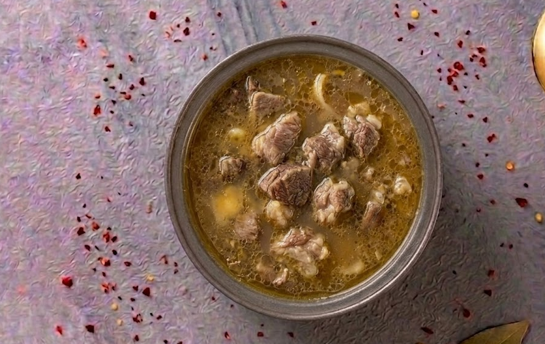
ÇorbaSarımsaklı özel sosu ve bol kemik sulu yapısıyla, ustasının elinden çıkan gerçek şifa kaynağı.
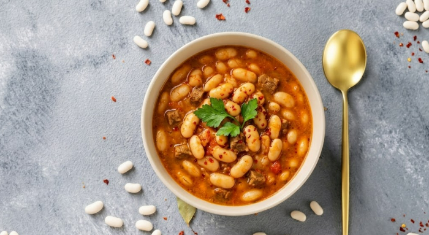
Ev YemeğiGeleneksel güveçte, taze tereyağı ve özel sosuyla ağır ağır pişmiş anne usulü kuru fasulye.
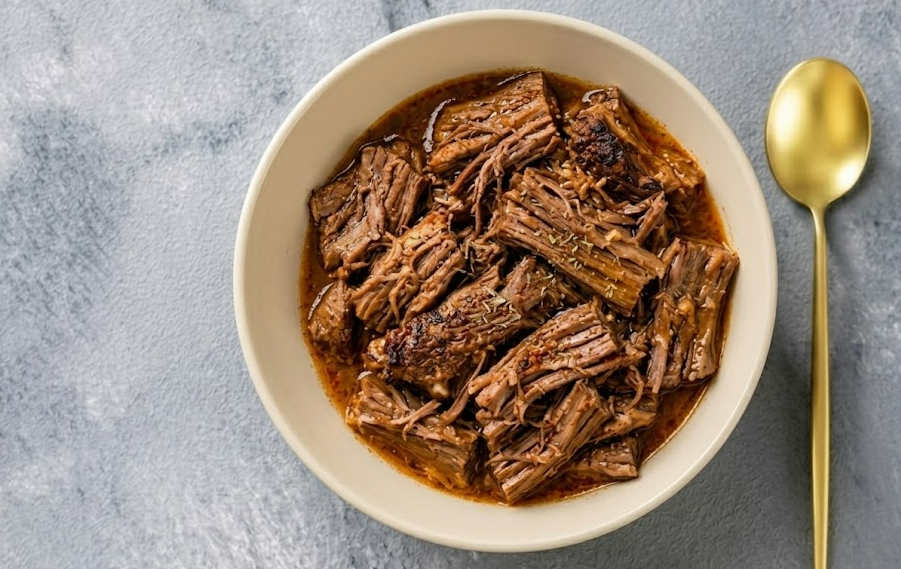
Ev YemeğiÖzel taş fırında saatlerce pişerek tel tel ayrılan, ağızda dağılan lokum gibi dana eti.
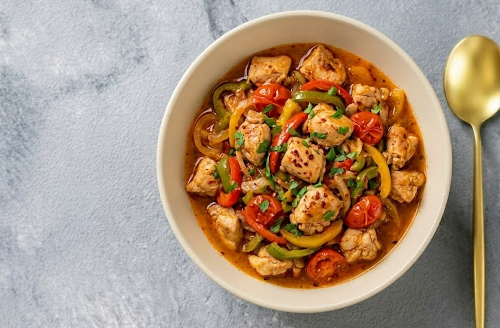
Ev YemeğiTaptaze renkli biberler, domates ve yumuşacık tavuk göğsünün enfes sosla buluştuğu lezzet şöleni.
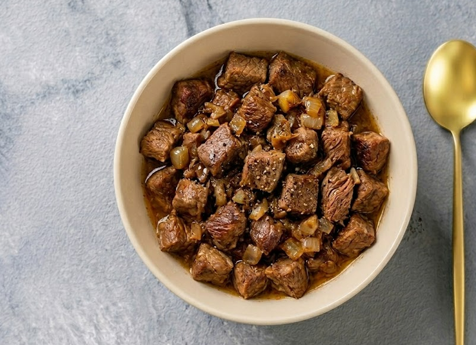
Ev YemeğiKendi yağında kavrularak lezzetine lezzet katmış, yumuşacık etleriyle gerçek bir lokanta klasiği.
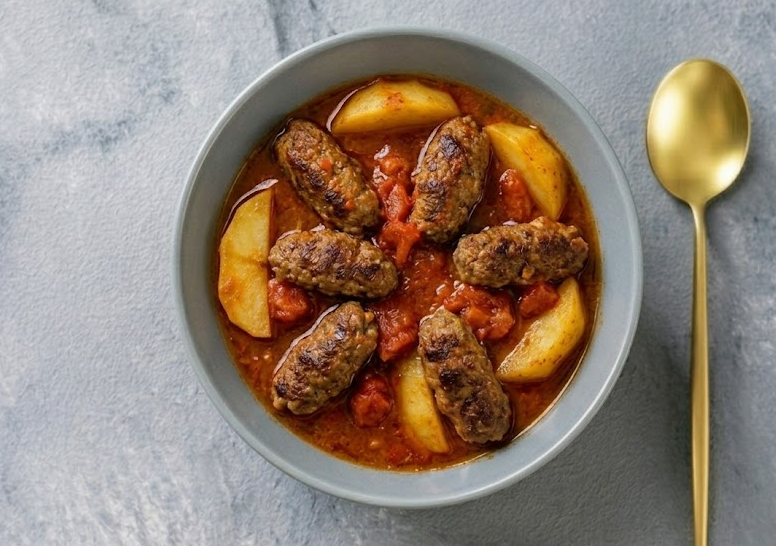
Ev YemeğiÖzenle yoğrulmuş köfteler, fırınlanmış patates ve nefis domates sosunun fırın tepsisindeki muhteşem buluşması.
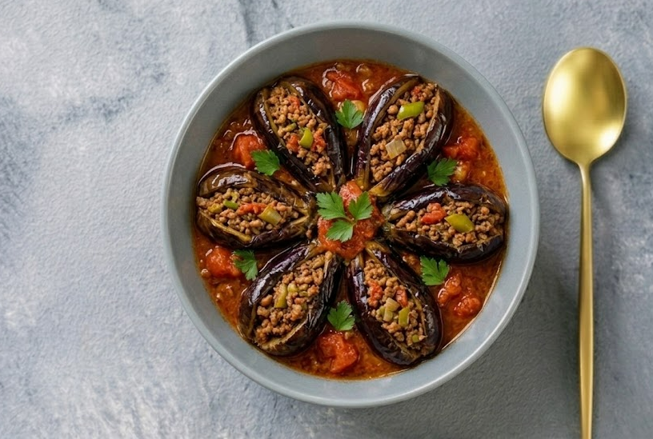
Ev YemeğiFırınlanmış taze patlıcanların arasında bol domates soslu, kıymalı harç ve enfes baharatlar.
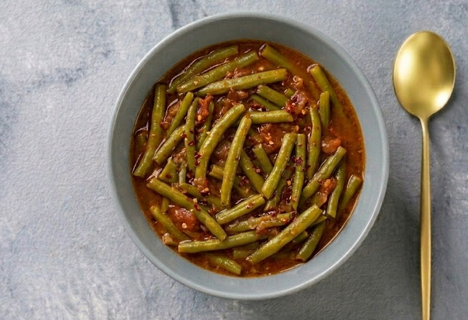
Ev YemeğiMevsimin en taze sebzeleriyle zeytinyağlı olarak hazırlanan, hafif ve vitamin dolu ev yemeği alternatifleri.
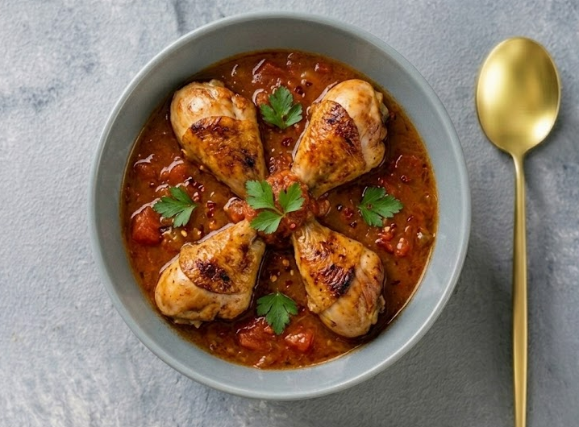
Ev YemeğiFırında nar gibi kızarmış, dışı çıtır, içi sulu sulu kalan mükemmel soslu tavuk incik.
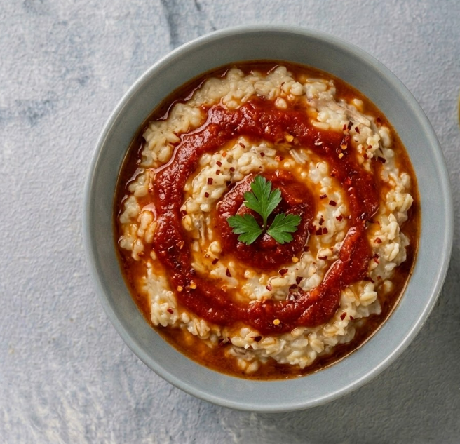
Ev YemeğiDövülmüş buğday ve etin saatlerce tahta kaşıkla sakız gibi olana dek dövüldüğü, düğünlerin ve bayramların baş tacı.
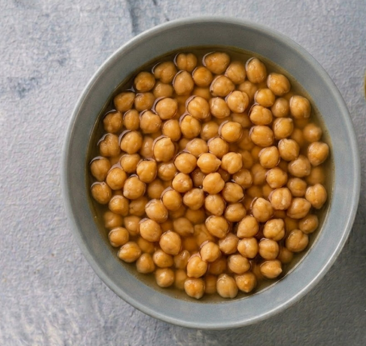
Ev Yemeğiİlikli kemik suyu ve ev salçasıyla özdeşleşmiş, dumanı tüten, lokum kıvamında sulu tencere yemeği.
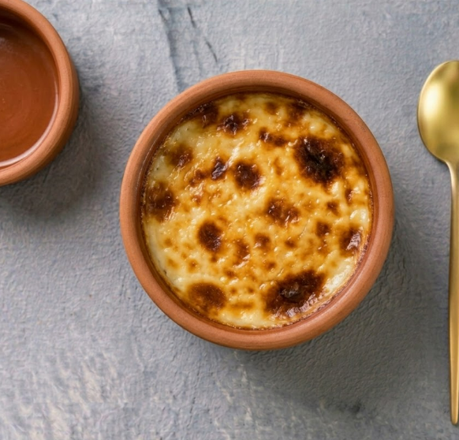
TatlıFırında üzeri nar gibi kızarmış geleneksel sütlaç.
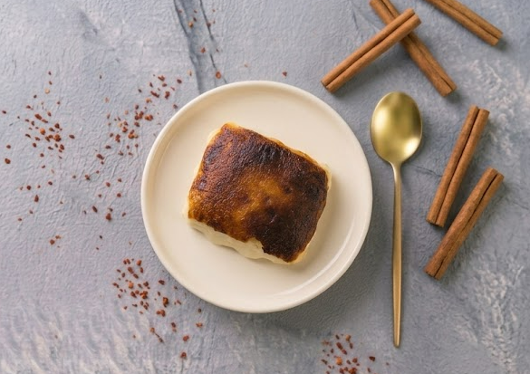
TatlıAltı hafifçe tutturulmuş, yoğun süt kaymağı lezzeti ve nefis karamelize kokusuyla klasik tatlımız.
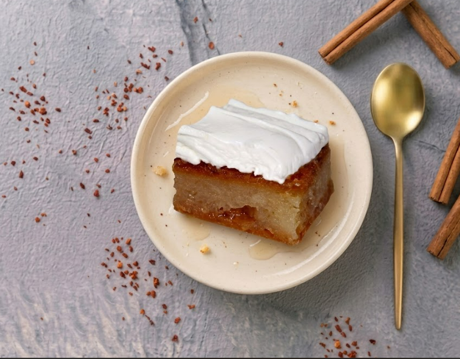
TatlıŞerbetini tam çekmiş, arasına meşhur kaymak serilerek lezzet doruklarına ulaştırılan efsanevi kapanış.
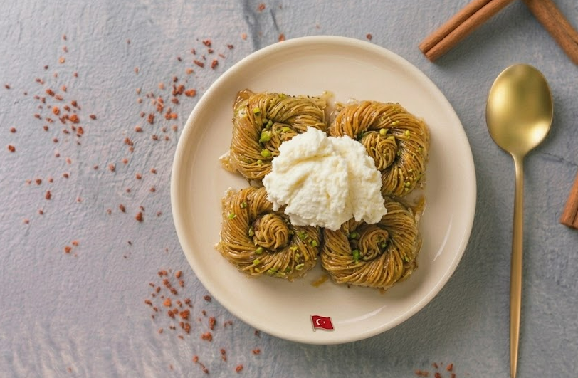
TatlıBol fıstıklı, çıtır çıtır hamuru ve tam kıvamında şerbetiyle damak çatlatan burma lezzeti.
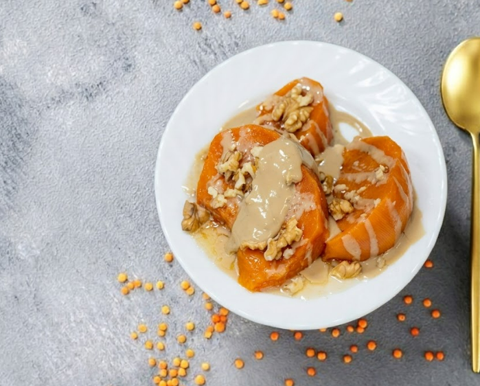
TatlıTahin ve iri ceviz parçalarıyla taçlandırılmış, lokum gibi fırınlanmış geleneksel kabak tatlısı.